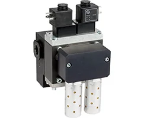
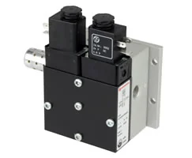
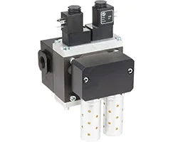
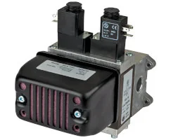
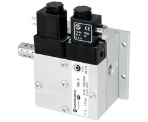
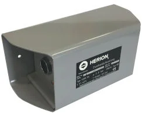

Datasheet (PDF)
en_5_3_783_SCSQ10.pdf
Tải tài liệuSelf-monitoring safety valve, G1/2, NC, 3/2, solenoid pilot / spring return

Mã SCSQ101D01D02400 (Self-monitoring safety valve, G1/2, NC, 3/2, solenoid pilot / spring return) thuộc dòng SCSQ, nhóm Safety Valves, kèm khoảng 11 phụ kiện liên quan như đế van, đầu nối và bộ tiêu âm. Lắp đủ phụ kiện giúp van xả đúng lưu lượng thiết kế. Thông số: Medium: Compressed air | Port Size: G1/2 | Flow: 3000 l/min, 106 scfm | Operating Temperature: -10 ... 60 °C, 14 ... 140 °F | Body: Aluminium | Country of Origin: Czechia. Gửi cấu hình lắp và sơ đồ khí để chúng tôi liệt kê phụ kiện và báo giá đồng bộ, đồng thời xác minh datasheet trước khi chốt.
Các thông số phục vụ nhận diện ban đầu. Khi đặt hàng, vui lòng gửi yêu cầu để xác nhận lại cấu hình, chứng từ và điều kiện giao hàng.
Tài liệu hiển thị ở mức tham khảo để khách hàng kiểm tra nhanh. Với yêu cầu mua hàng, đội kỹ thuật sẽ xác nhận lại tài liệu phù hợp theo mã và cấu hình thực tế.
en_5_3_783_SCSQ10.pdf
Tải tài liệuz9561BR_Functional-Safety-ISO13849_EN.pdf
Tải tài liệuOM_VA_7503641000000006_SCSQ_EN.pdf
Tải tài liệuDanh sách tham khảo giúp định hướng phụ kiện, cáp, fitting, coil, mountings hoặc mã tương tự. Khi báo giá, thông tin sẽ được kiểm tra lại theo cụm lắp thực tế.
18D Electro-mechanical pneumatic pressure switch, Flange, 1-16 bar
Xem mã chínhElectrical plug with cable gland, DIN EN 175301-803 Form A, 300Vdc
Pneufit D acetal push-in fitting, adaptor, straight, G1/2, 12mm
Pneufit C push-in fitting, swivel adaptor, elbow, G1/2, 12mm
Pneufit 10 push-in fitting, swivel adaptor, tee, G1/2, 10mm
Excelon Plus Quikclamp with Bracket Assembly
Quietaire heavy duty silencer male, R3/4
Polyethylene (LLDPE) tubing, natural, 100m, 12mm
Polyamide tube, natural, 25m, 12mm/9mm
Super flexible polyamide tube, natural, 25m, 12mm/9mm
Tube cutter

Self-monitoring safety valve, G1/4, NC, 3/2, solenoid pilot / spring return

Self-monitoring safety valve, G1/2, NC, 3/2, solenoid pilot / spring return

Solenoid actuated fail-safe safety valve, G1/2, NC, 3/2, solenoid pilot / spring return

Solenoid actuated fail-safe safety valve, G3/4, NC, 3/2, solenoid pilot / spring return

Solenoid actuated fail-safe safety valve, G1/4, NC, 3/2, solenoid pilot / spring return

SCSQ101D01D02400 thuộc nhóm Safety Valves. Trang này dùng để đối chiếu mô tả, thông số kỹ thuật, tài liệu và phụ kiện liên quan trước khi gửi yêu cầu báo giá.
Bạn gửi part number in trên thân van; chúng tôi đối chiếu datasheet để xác định kiểu van (3/2, 5/2, 5/3), cỡ cổng và kiểu điều khiển. Nếu mã mờ, ảnh thân van và vị trí lắp giúp nhận diện. Xác định đúng loại van là bước đầu để chọn biến thể và phụ kiện phù hợp trước khi báo giá.
Bạn gửi part number cần tra; chúng tôi đối chiếu và cung cấp các thông số kỹ thuật chính cùng tài liệu liên quan đến mã đó. Nếu một mã có nhiều tài liệu (datasheet, hướng dẫn lắp, bản vẽ), chúng tôi nêu rõ từng loại. Việc này giúp bạn xác minh cấu hình trước khi đưa vào hồ sơ mua hoặc lắp đặt.
Bạn gửi part number thiết bị chính; chúng tôi đối chiếu thông tin phụ kiện và datasheet để liệt kê các mã liên quan như đế, đầu nối, cáp, coil hoặc bộ lọc. Danh sách này giúp bạn đặt đồng bộ, tránh thiếu khi lắp. Nếu cần, chúng tôi nhóm phụ kiện theo chức năng để bạn dễ chọn.
Được. Bạn gửi hai part number cần so sánh; chúng tôi đối chiếu các thông số chính từ datasheet như cổng, dải làm việc, điều khiển và phụ kiện liên quan, rồi nêu điểm khác biệt. Trên cơ sở so sánh đó, bạn chọn biến thể phù hợp ứng dụng trước khi yêu cầu báo giá.
Gửi yêu cầu an toàn & mã van để đối chiếu cấu hình. Gửi part number, số lượng, ảnh tem hoặc vị trí lắp để đối chiếu cấu hình trước khi báo giá.